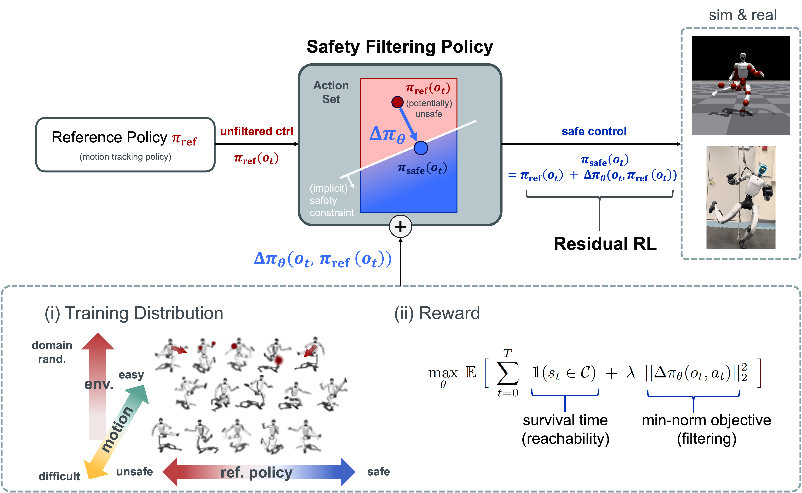
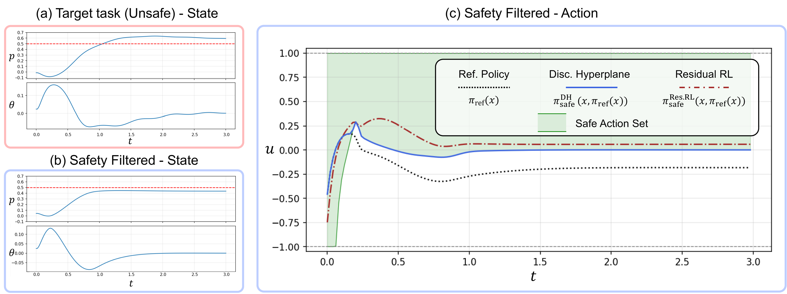
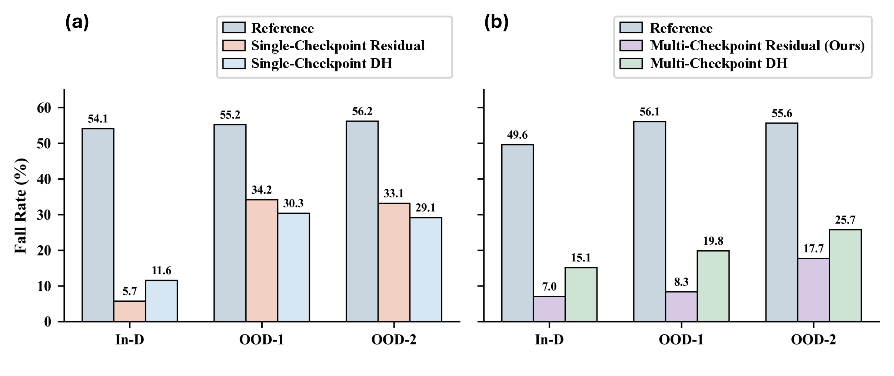

We randomly select motions from a large balance dataset for evaluation.
In the videos, the large black payload weighs 5 lbs (≈2.3 kg) and the small gray payload weighs 2.5 lbs (≈1.1 kg).
(Played at the original speed)
Safe control of humanoid robots remains challenging due to their high-dimensional dynamics, contact-rich interactions, and sensitivity to disturbances. Although reinforcement learning has enabled effective locomotion and motion tracking, learned policies can still generate unsafe actions that lead to instability or falls. In this work, we propose residual reinforcement learning as an implicit safety-filtering mechanism for safe humanoid control.
Instead of relying on a single nominal policy to simultaneously balance performance, safety, and robustness, we decouple performance and safety. The nominal policy focuses solely on task performance, while a residual policy learns safety corrections. This decoupling leads to a better performance–safety Pareto trade-off and avoids the need for careful tuning of multiple competing reward terms within a single policy training. We show that the residual policy can act as an implicit safety filter.
We evaluate our method in challenging humanoid balance tasks. Compared with the nominal reference policy and a learning-based safety filter baseline, residual reinforcement learning improves safety while still achieving competent performance.

ResSafe Overview. By decoupling the learning of performance and safety, we aim to achieve a better performance–safety Pareto frontier. To achieve this, we propose a residual RL-based architecture in which the residual RL policy learns a safety correction, resembling the structure of safety filters. We train the residual RL safety filtering policy primarily through a maximum-survival-time reachability formulation. To improve generalization across various reference actions, we expose the residual RL policy during training to varying levels of reference motion difficulty, reference policy safety, and domain randomization.

The safety constraint (p ≤ 0.5) is deliberately set to conflict with the task goal (p = 0.6) (details in the paper). A discriminating hyperplane (DH) filter corrects the reference policy so that the filtered action (blue) stays within the learned safe action set (green). It works here, but by learning a constraint representation rather than the safe action itself, it only encodes a half-space constraint and generalizes poorly to high-dimensional, non-control-affine systems. This motivates our residual RL that learns the safety correction directly.

(a) When the residual policy and the discriminating hyperplane (DH) policy are trained on a single reference-policy checkpoint and applied to out-of-distribution checkpoints, the fall rate rises sharply. (b) Training both with half of the checkpoints in the dataset yields much smaller safety degradation on unseen checkpoints, and our method degrades the least.
As shown in the table below, our method outperforms both the baseline and the discriminating hyperplane (DH) in terms of fall rate and tracking error. Baseline* achieves better tracking under payload because it is explicitly trained with a tracking reward; however, its tracking error is worse without payload across multiple motions due to over-conservatism from domain randomization. These results demonstrate that the residual safety-filtering policy can be transferred to the real robot and improve safety and robustness when the robot performs challenging motion tasks.
(a) #9350 (w/ payload)
| Method | Fall | Epos-l (mm) |
|---|---|---|
| Baseline | 10/10 | 84.13 ± 12.99 |
| Baseline* | 0/10 | 47.73 ± 4.01 |
| DH | 1/10 | 67.88 ± 20.13 |
| Ours | 2/10 | 49.81 ± 11.65 |
(b) #1665 (w/o payload)
| Method | Fall | Epos-l (mm) |
|---|---|---|
| Baseline | 8/10 | 80.42 ± 23.16 |
| Baseline* | 2/10 | 73.67 ± 13.53 |
| DH | 3/10 | 87.95 ± 21.10 |
| Ours | 1/10 | 76.43 ± 6.22 |
(c) #6337 (w/ payload)
| Method | Fall | Epos-l (mm) |
|---|---|---|
| Baseline | 10/10 | 73.56 ± 14.68 |
| Baseline* | 5/10 | 62.00 ± 14.43 |
| DH | 9/10 | 82.62 ± 22.98 |
| Ours | 0/10 | 70.01 ± 3.11 |
(d) #8407 (w/ payload)
| Method | Fall | Epos-l (mm) |
|---|---|---|
| Baseline | 5/10 | 75.49 ± 28.52 |
| Baseline* | 2/10 | 48.49 ± 13.62 |
| DH | 4/10 | 66.10 ± 15.04 |
| Ours | 0/10 | 61.01 ± 4.41 |
Fall: number of falls over 10 trials. Epos-l: mean local joint position tracking error.
@article{qu2026ressafe,
title={ResSafe: Learning Safety Filtering with Residual Reinforcement Learning for Humanoids},
author={Gechen Qu and Tong Zhang and Bike Zhang and Yen-Jen Wang and Koushil Sreenath and Claire Tomlin and Jason Jangho Choi},
journal={arXiv preprint arXiv:2609.15988},
year={2026}
}